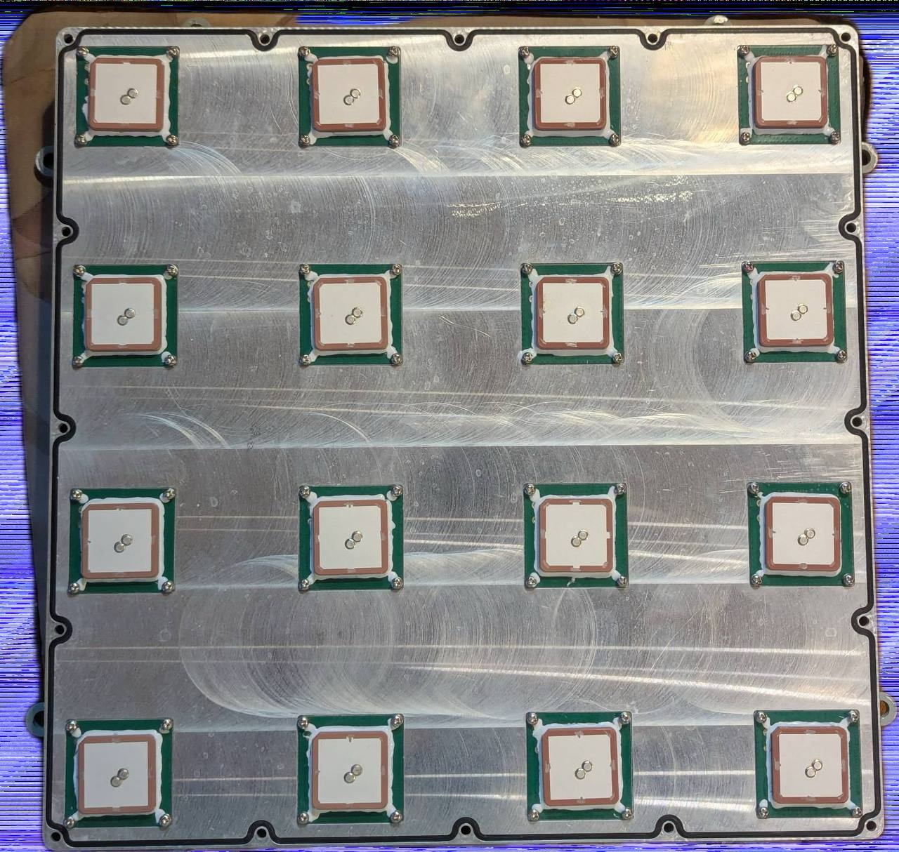
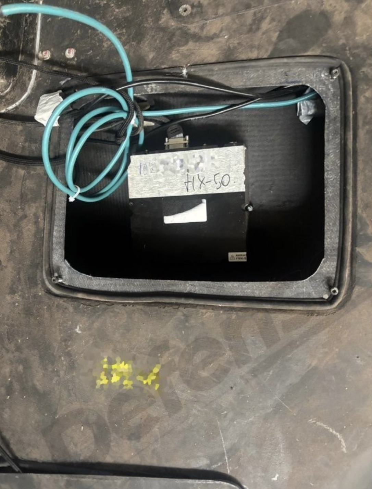
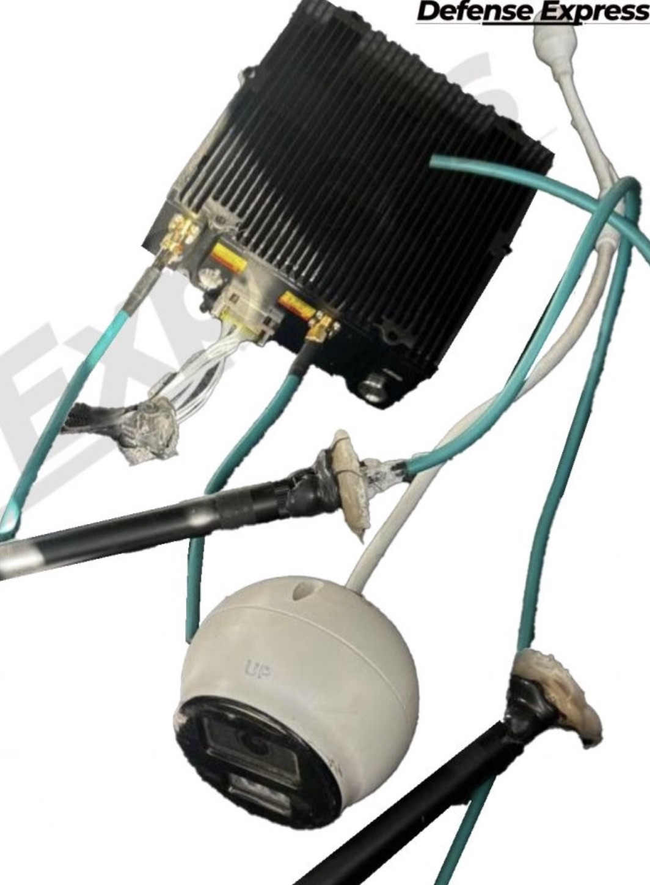
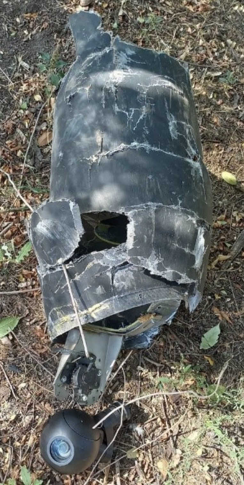
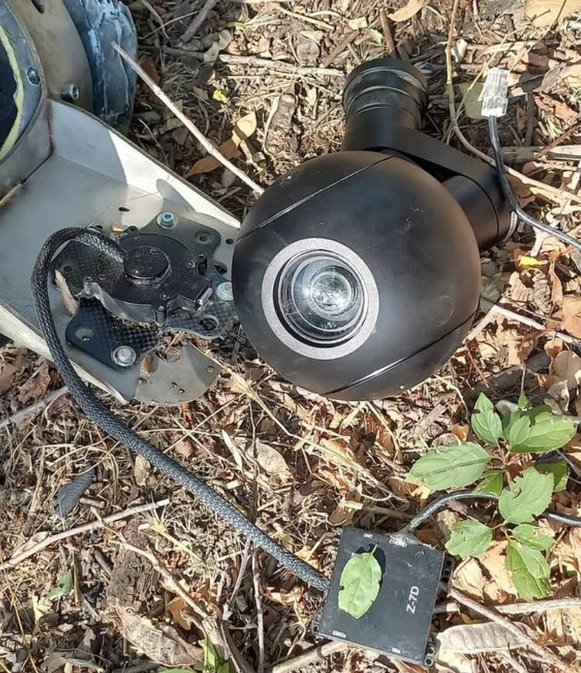
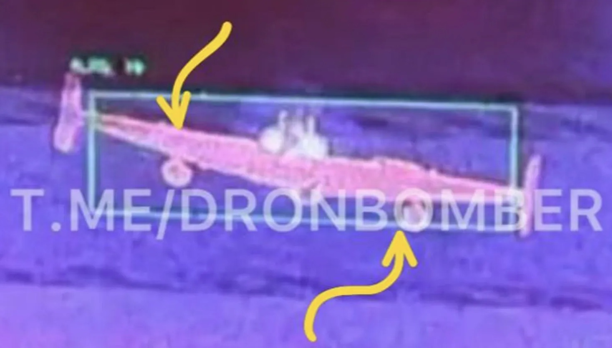
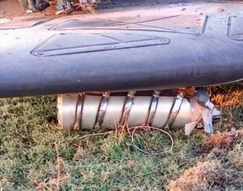

Select a component from the menu to explore a timeline of its evolution
September 2022
The original airframe is a white fiberglass shell lined with
Nomex honeycomb.


July 2023
The Russians replace the honeycomb lining with a thick foam
layer sandwiched between carbon fiber-reinforced polymer
coating.


November 2023
Some drones are painted black to camouflage against the
night sky.


December 2025
Gerans carrying R-60 air-to-air missiles have large
stabilizers installed at the wing tips.


May 2026
A recess in the fuselage is made to hold an R-60 missile.

May 2026
The Geran’s classic delta shape is altered slightly to
improve aerodynamics when flying with a turbojet engine.


September 2022
The original Iranian engine is Mado’s MD-550, a
50-horsepower, two-stroke, four-cylinder piston engine
reverse-engineered from a German Limbach design.


The original Iranian engine starter.

The Geran carries an 18650 Lithium-ion battery.


July 2023
The original Mado engine is swapped out for one of two
Chinese alternatives: the Xiamen Limbach L550E and Beijing
MicroPilot Flight Control Systems’ MD-550. Like the Mado
MD-550, both Chinese models are 50-horsepower two-stroke
four-cylinder piston engines.


The Iranian engine starter is swapped out for the Russian
B-103.

The Li-ion battery is replaced by DELTA CT AGM, a motorcycle
starter battery.


August 2024
The material for the Russian B-103 engine starter gets an
upgrade.

February 2025
The Geran flies with a Chinese Telefly JT80 turbojet engine.

September 2022
The original Iranian flight controller is composed of eight
circuit boards.


A separate navigation board contains the Sadra IMU.


July 2023
The new Russian B-101 flight control unit consists of four
layers of circuit boards with 3D-printed supports and an
integrated IMU.


July 2023
The drone carries an Iranian Nasir satellite receiver with
four antenna elements.


The Iranian satellite receiver is swapped out for the
Russian Kometa-M4, a four-element satellite antenna
integrated into a larger B-105 satellite navigation unit.


March 2024
The Geran carries the eight-element Kometa-M8 satellite
receiver under a radio-transparent hatch.


January 2025
The Geran is equipped with a round eight-element satellite
receiver.


February 2025
Russia’s Kometa-M12 is introduced to the Geran, adding four
new antenna elements.


March 2025
The Geran carries a round satellite receiver with sixteen
antenna elements.


February 2026
A new satellite receiver contains sixteen elements in a
four-by-four array.

The Geran gets a third sixteen-element CRPA model in
Russia’s Kometa-M16.

November 2023
Geran carries a 4G modem with a Ukrainian Kyivstar SIM card
in a 3D-printed box taped to the outside of the winglet,
allowing it to transmit flight information back to Russia
and enabling operators to flag spots where the drones are
downed.


March 2024
A pan/tilt video camera is bolted onto the airframe,
allowing the Geran to relay video of its surroundings back
to Russia mid-flight.

September 2024
At least one Geran is equipped with a Starlink communication
terminal.


February 2025
Geran carries a Raspberry Pi minicomputer with two 3G/LTE
modems, a standardized version of the telemetry module seen
in November 2023.


July 2025
Geran begins to fly with a Chinese Xingkai Tech mesh network
radio modem, allowing each drone to act as a signal repeater
for nearby units and forming an airborne network for two-way
communication: drones send flight information back to
Russia, while operators send control commands back in real
time. The modems are paired with fixed turret network
cameras from the Chinese company Hikvision.




December 2025
The Geran gets another camera upgrade. The Chinese Honpho TS130C-01 has long-wave IR capabilities, a laser rangefinder, and built-in computer vision.


September 2022
The original Iranian warhead, BCh-50, was a 110-pound
(50-kg) fragmentation-high explosive-shaped charge two-stage
penetrator.


July 2023
Introduction of BSF-50 (БСФ-50), a Russian high explosive
110-pound warhead.

January 2024
The Geran begins carrying the BST-52 (БСТ-52), a 115-pound
(52-kg) Russian shaped charge-incendiary warhead.


November 2024
Debut of OFZBCh-50 (ОФЗБЧ-50), a 115-pound Russian
fragmentation-high explosive-incendiary warhead.


November 2024
TBBCh-50M (ТББЧ-50М), a 110-pound thermobaric warhead.


January 2025
Introduction of the larger, 198-pound (90-kg) thermobaric
warhead TBBCH-90.


.jpeg)
September 2025
Two BST-52 warheads are carried back-to-back inside the
fuselage.


December 2025
A Soviet R-60 (Р-60) air-to-air missile is mounted with an
APU-60-1MD launcher atop the fuselage, likely to combat
approaching anti-aircraft helicopters and interceptor
drones.


January 2026
A Verba MANPAD is mounted atop the fuselage in another
attempt to target Ukrainian air defenses.


March 2026
The Geran is equipped with mock R-60 missiles, further
complicating Ukrainian threat assessment.


August 2025
The Geran carries two PTM-3 (ПТМ-3) anti-tank mines, one
under each wing.



March 2026
The Geran carries two FPV drones, one mounted atop each
wing.